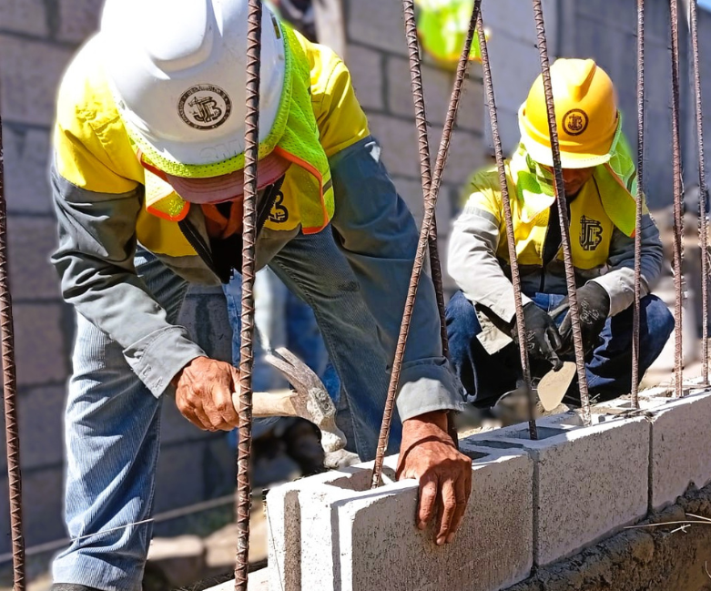
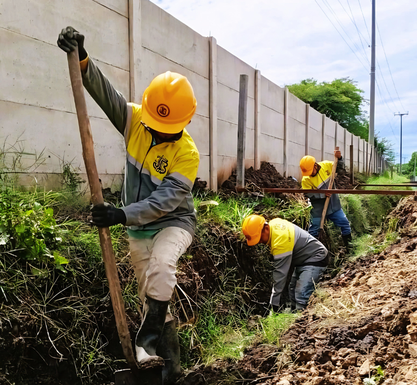
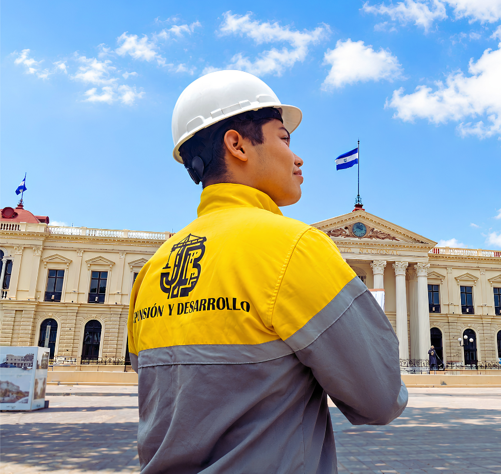

Complejo habitacional sostenible con áreas recreativas y sistemas de ahorro energético.

Edificio corporativo de 15 niveles con tecnología inteligente.

Centro comercial moderno con áreas verdes y de esparcimiento urbano.